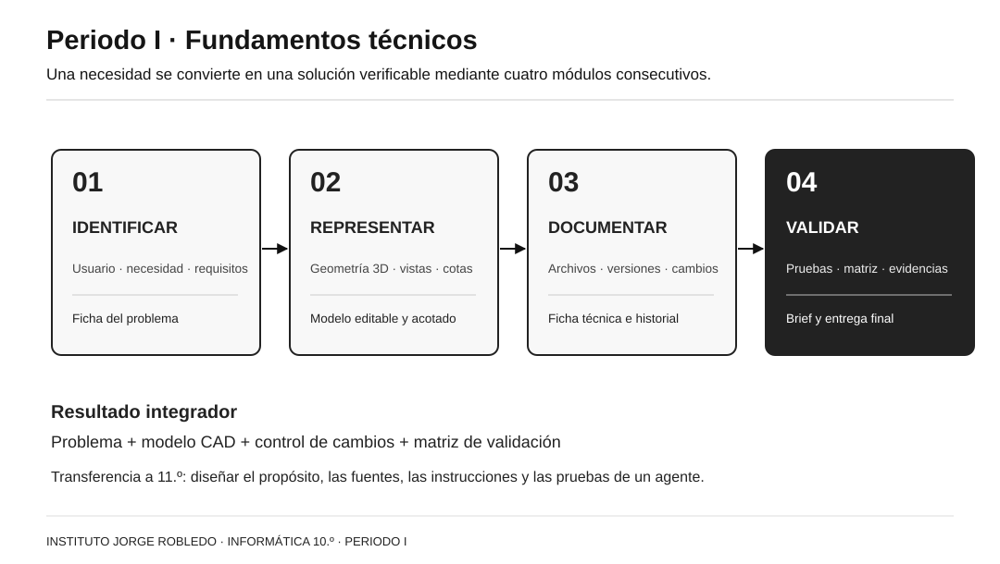

INFORMATICS 10 · FOUNDATIONS FOR AI AGENTS
Study the idea.
Then solve the workshop.
Design thinking · Web development · Agent readiness
Every subject follows the same two-stage structure as Statistics 11: Theory and Assessment. Explore the concept, study a worked example, complete the activity and test your knowledge.
Independent learningTopic → Theory → Worked example → Assessment → FeedbackProgress on this version stays on this device. Official grading requires a separate authenticated backend.
Learning progress0%
0 / 12 completed checkpoints
LEARN BY SUBJECT
Three terms · foundational skills for Grade 11
12 topics across three projects: design, a web knowledge organizer and an agent-readiness portfolio. Each stage has its own explanation, learning task and progress.
PERIODO I · RECURSO VISUAL
Cómo se conectan los primeros cuatro módulos
Problema → representación → documentación → validación. Consulta el esquema general y abre cada tema para estudiar la teoría y sus diagramas.
